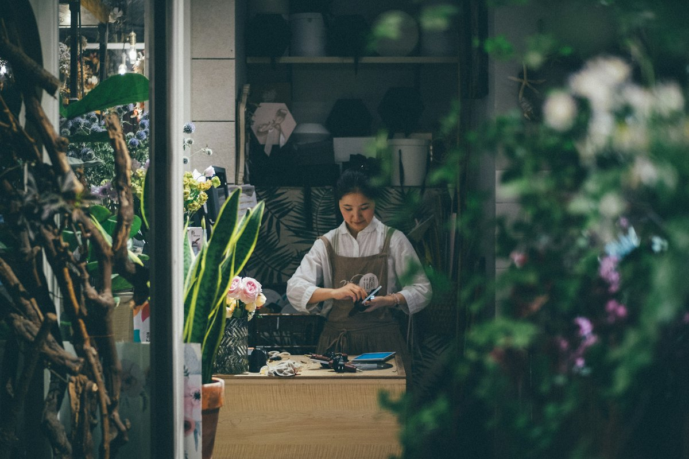

Tentang KWU Administrasi Niaga
Halaman ini menjelaskan identitas, tujuan, dan layanan KWU sebagai pusat bisnis kewirausahaan kampus. Teks profil resmi masih menunggu konfirmasi, sehingga bagian ini disusun berdasarkan deskripsi peran dan ruang lingkup kerja.

Pusat bisnis dan kewirausahaan kampus
KWU adalah unit yang mengambil sisi niaga dari kegiatan kampus: merangkai produk usaha mahasiswa ke dalam satu katalog, mendampingi transaksi dengan rapi, dan membuka pintu kemitraan dengan pihak luar.
Posisi KWU bukan sekadar tempat berjualan. Fungsinya adalah menjembatani ide yang masih di kelas dengan kebutuhan pasar yang nyata, sekaligus membuka peluang bagi pelaku usaha kecil untuk tumbuh.
Tiga hal yang jadi pegangan KWU
Arah kerja yang bisa dipakai sebagai rujukan saat menentukan kebijakan dan prioritas layanan.
Transaksi yang bisa dipertanggungjawabkan
Setiap pesanan punya nomor, status, dan rincian harga yang jelas. Tidak ada biaya tersembunyi dan setiap tahap transaksi bisa dilacak ulang.
Akses yang tetap ramah untuk mahasiswa
Katalog bisa dibuka tanpa login, harga grosir ditabulasi jelas, dan tiap langkah selalu punya penjelasan singkat sebelum data dikirim.
Jalur kerja sama yang tetap jelas
Grosir, partnership, dan kolaborasi program punya formulir, alur, serta status yang berbeda agar mudah dipahami sejak awal.
Layanan yang tersedia di KWU
Untuk mahasiswa dan pembeli
-
Katalog produk terpusat
Produk dari mitra usaha mahasiswa dengan kategori, filter, dan status stok. -
Wishlist dan keranjang tersimpan
Produk favorit bisa disimpan dan dipesan lagi kapan saja. -
Riwayat transaksi
Nomor pesanan, status, dan rincian item tersimpan untuk dibaca ulang. -
Pengajuan kerja sama
Nomor pengajuan dan status tinjauan untuk RFQ, partnership, dan program.
Untuk mitra, pemasok, dan institusi
-
Penataan produk mitra
Proses masuk katalog dengan informasi harga, berat, dan kemasan yang konsisten. -
Permintaan penawaran harga
RFQ untuk pembelian jumlah besar dengan kebutuhan dan jadwal yang jelas. -
Ruang acara dan promosi
Peluang showcasing produk dan promosi event untuk mitra. -
Program pendampingan
Pendampingan produk, kemasan, dan promosi digital.
Apa yang berubah bagi mahasiswa
Mahasiswa yang punya ide tidak harus mencari pembeli sendiri-sendiri. Produk mereka bisa masuk katalog, bertransaksi dengan alur yang rapi, dan punya kanal untuk bekerja sama dengan pihak luar.
Kategori produk yang ditata dalam satu katalog.
Jalur kerja sama dengan formulir terpisah.
Status transaksi yang bisa dilacak pengguna.
Nomor pengajuan untuk setiap formulir kerja sama.
Yang masih menunggu data resmi
Bagian berikut sengaja tidak diisi dengan karangan agar tidak ada informasi yang menyesatkan.
Logo resmi
Wordmark KWU masih sementara dan belum memakai lambang kampus.
Alamat dan kontak resmi
Alamat, nomor telepon, dan email resmi belum dipublikasikan.
Visi, misi, dan tim
Teks visi-misi serta susunan tim KWU akan ditambahkan setelah disahkan.